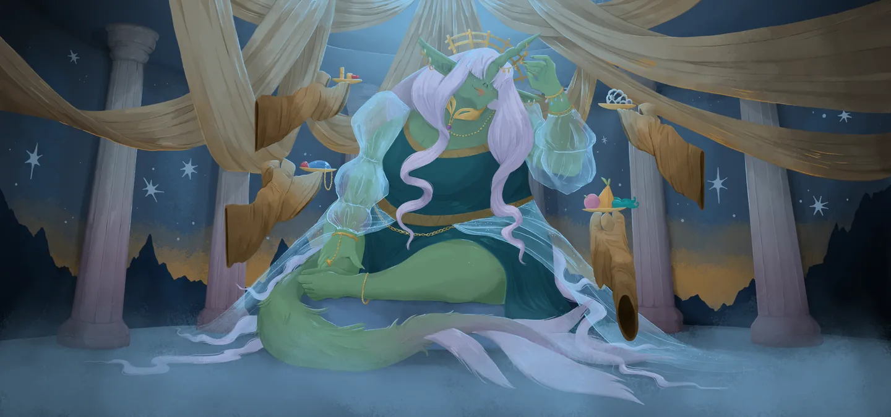
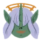
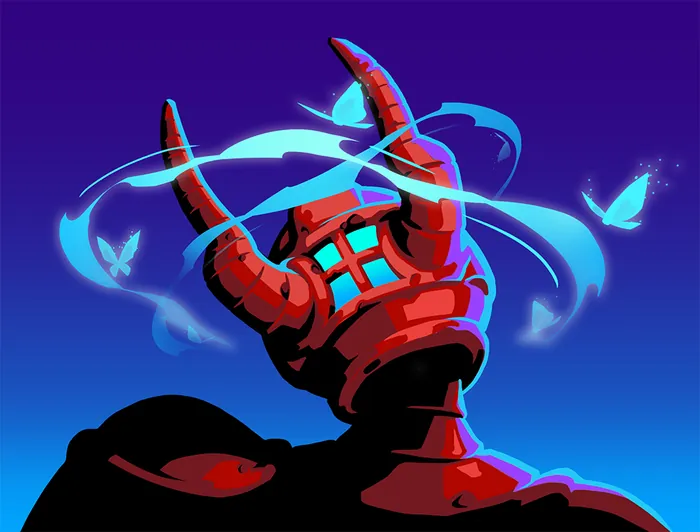
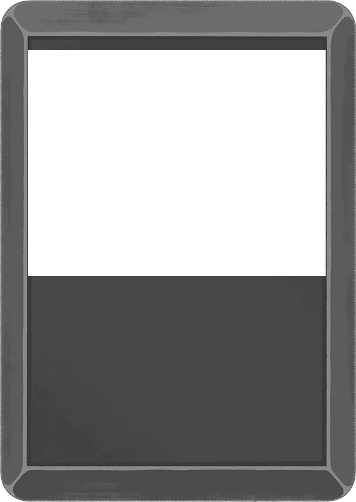
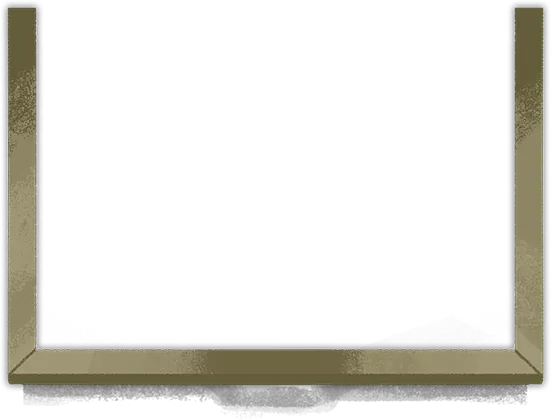
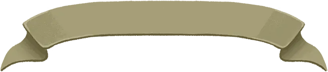

切換遊戲版本2026-06-18
所有先古之民


諾奴佩普
機緣的化身
第 3 幕10 件遺物
造訪先古之民時會將生命值完全恢復（進階 2 以上只恢復已損失生命的 80%）。
諾奴佩普最強遺物強度排行
諾奴佩普可能提供的 10 件遺物，從必拿到陷阱一次看完。點選可跳到下方完整效果。
搶先體驗版的社群評級——版本平衡經常調整，僅供參考。
諾奴佩普的全部遺物
每次造訪會從以下遺物池中抽出 3 件遺物。
遺物池 1
從 10 件中提供 3 件賜福鹿角
在每回合開始時獲得。在戰鬥開始時，將3張暈眩放入你的抽牌堆。
能量
能量用於打出你手牌中的卡牌。


不能被打出。
虛無。
虛無。


暈眩
狀態
豔麗圍巾
你每回合從你的手牌打出的第5張牌可以被免費打出。
嬌嫩蕨草
在每場戰鬥開始時，用隨機藥水將你的空藥水欄位填滿。
鑽石頭冠
如果你在本回合打出的牌少於等於2張，則受到敵人的傷害減半。
皮草大衣
隨機標記7處戰鬥。這些戰鬥中的敵人將只有1點生命。
亮片
為之後的所有卡牌獎勵附魔：華彩。
華彩
這張牌每場戰鬥能夠重放一次。
重放
將這張牌額外打出1次。
布質果實
獲得31點最大生命值。
圖章戒指
拾起時，獲得999金幣。
華美手鐲
從你的牌組中選擇3張牌，附魔：迅捷3。
牌組中有 4 張以上可附魔「迅速」的牌
迅速
你第一次打出這張牌時，抽3張牌。
對話
先古之民的台詞會依角色與造訪次數而變化。
初次見面
諾奴佩普
我有幾千年都沒有接待過訪客了！
哎呀，你的穿搭看起來有些乏味呢，來，我們給你挑些漂亮的穿吧。
哎呀，你的穿搭看起來有些乏味呢，來，我們給你挑些漂亮的穿吧。
鐵甲戰士
第 1 次造訪
諾奴佩普
啊，鐵甲戰士，終於來到了我的面前。
過來吧，我會賜予你我的力量。
過來吧，我會賜予你我的力量。
第 2 次造訪起
諾奴佩普
鐵甲戰士，鐵甲戰士……是我之前的贈禮還不夠麼？
第 5 次造訪
諾奴佩普
你又回來了麼，我的勇士？這是多少次了？
過去的你，不是強大到可以消滅整個族群麼？
過去的你，不是強大到可以消滅整個族群麼？
靜默獵手
第 1 次造訪
諾奴佩普
一個小小的竊賊溜進了我的領域麼？
別以為我看不見你啊？出來吧！
別以為我看不見你啊？出來吧！
靜默獵手
靜默獵手從陰影中走了出來……
諾奴佩普
獵手啊，是什麼讓你回到了高塔？
過來吧，穿戴上這些賜福。
過來吧，穿戴上這些賜福。
第 2 次造訪起
諾奴佩普
我為你準備了禮物，刺客，不用害羞。
第 5 次造訪
諾奴佩普
在她的傀儡之中，屬你最讓我吃驚。
靜默獵手
……
諾奴佩普
是什麼奪走了你的第一次生命？是涅奧找到你的麼？
真可惜啊，你不說話。
真可惜啊，你不說話。
故障機器人
第 1 次造訪
諾奴佩普
構裝體也能夠配得上我的賜福麼？
過來吧，故障機器人。在所有自動機械裡，你將成為最美。
過來吧，故障機器人。在所有自動機械裡，你將成為最美。
第 2 次造訪起
諾奴佩普
可憐的機器呀，如此殘破不堪，來讓我將你好好改善吧。
第 5 次造訪
諾奴佩普
我通常不會喜歡建築師的造物，但我承認，你讓我有點喜歡上了。
故障機器人
<羞赧的鳴叫>
儲君
第 1 次造訪
儲君
我要來見諾奴佩普！
諾奴佩普
你從遙遠的地方帶來了這麼華美的袍子麼！
來，讓你的僕從們把你帶過來一點，我會給你賜福的。
來，讓你的僕從們把你帶過來一點，我會給你賜福的。
第 2 次造訪起
諾奴佩普
王室的訪客，該有王室的賜福。
僕人們！為我們倒點茶來。
僕人們！為我們倒點茶來。
第 5 次造訪
諾奴佩普
建築師發了瘋！只有一位高貴的勇士能拯救我們於此危難了……
儲君
無需擔心！我，儲君，將會終止這場瘋狂！
但是首先，喝茶！
但是首先，喝茶！
亡靈契約師
第 1 次造訪
亡靈契約師
你的護衛已經死了。傳聞說，你會賜福給想要殺死建築師的人。
諾奴佩普
我喜歡有能力的人，所以我會把自己的力量分給你一部分。
下一次，可別再殺我的護衛了。
下一次，可別再殺我的護衛了。
第 2 次造訪起
諾奴佩普
法師若要戰鬥，自然需要上好的衣裝和飾物。過來吧，亡靈契約師。
第 5 次造訪
諾奴佩普
建築師見到你的寵物，一定不會高興的。
亡靈契約師
你是指奧斯提麼？我會讓他來完成最後一擊的。
通用台詞
重複出現
諾奴佩普
塔頂有瘋狂在等待。穿上我的力量，消滅一切吧。
重複出現
諾奴佩普
來到我這裡，你走了很遠吧！
過來吧，接受我的賜福。
過來吧，接受我的賜福。